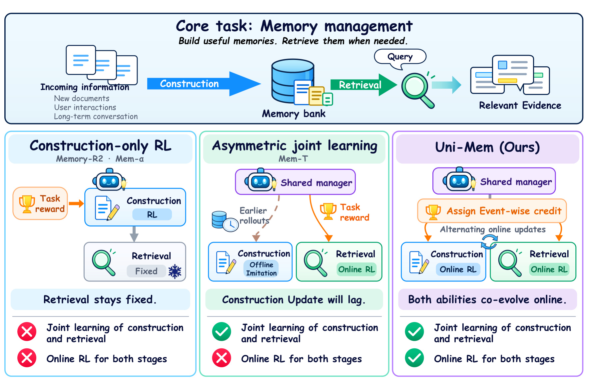
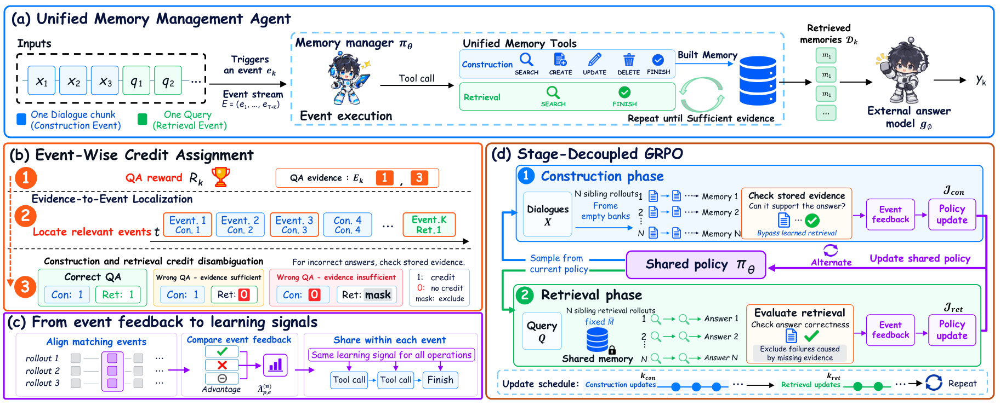
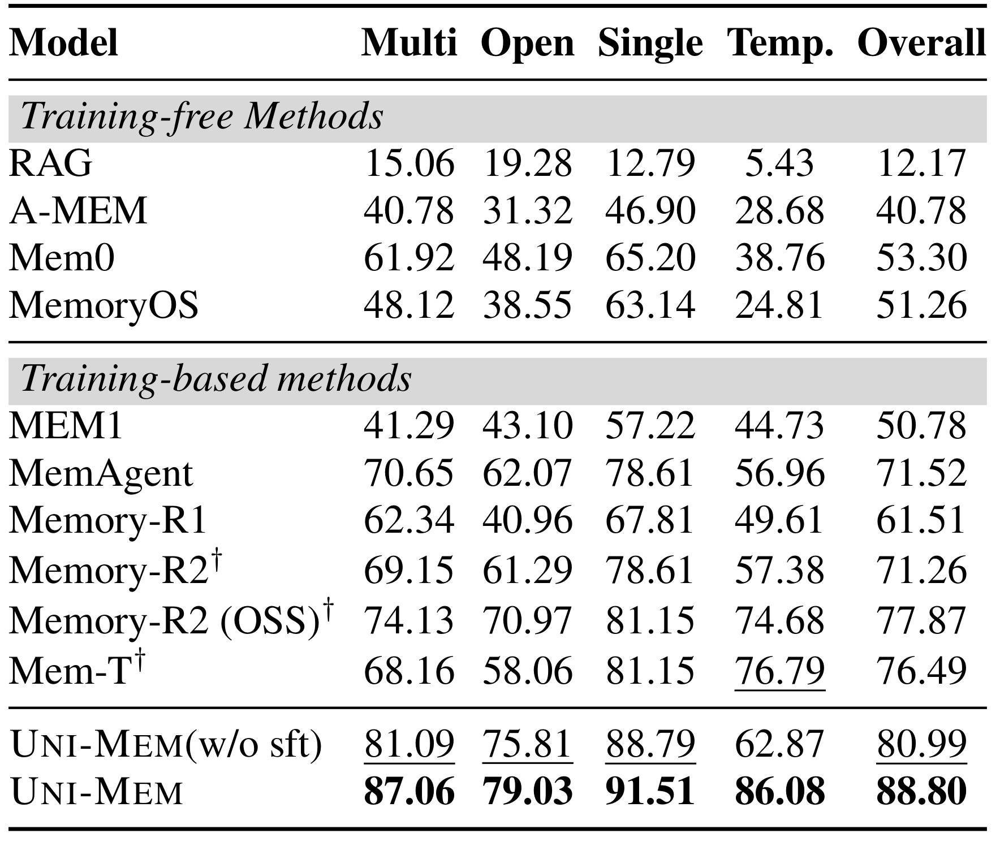
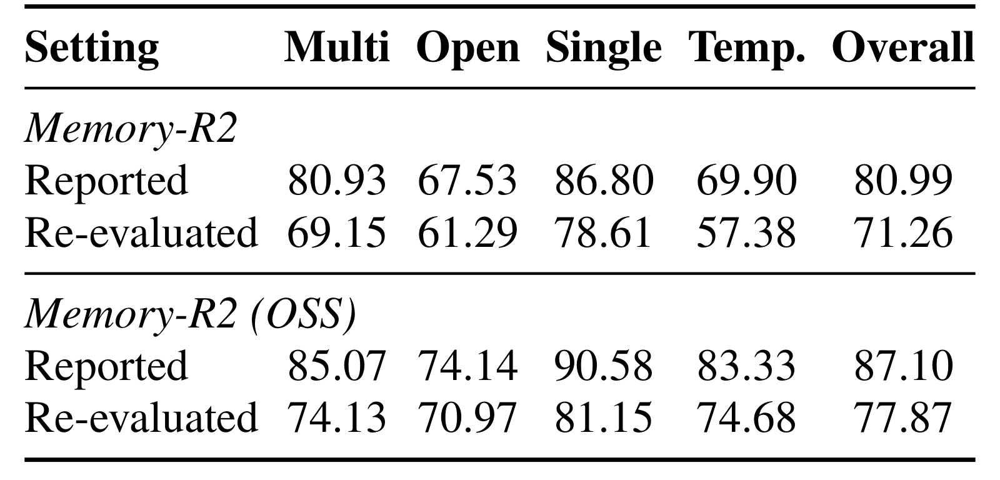
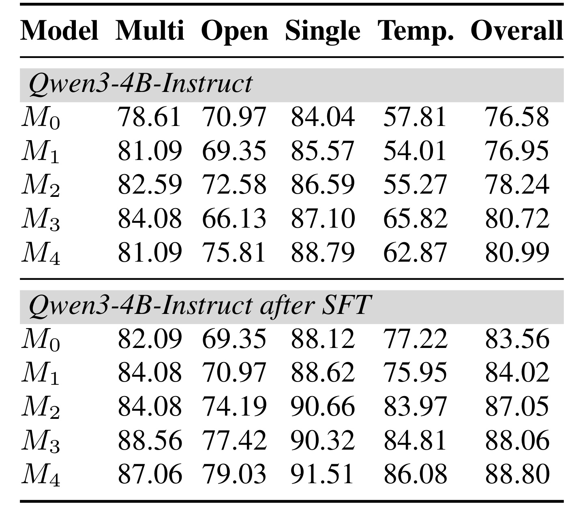
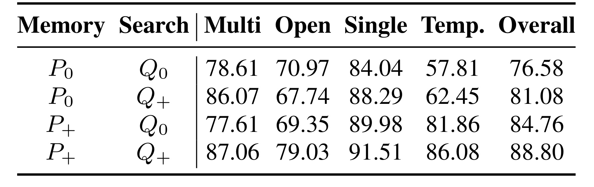
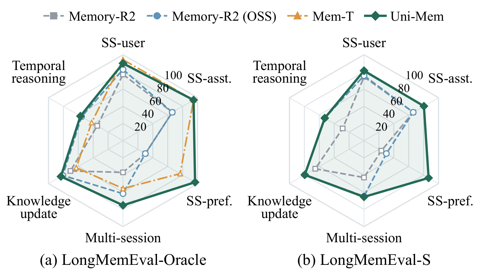
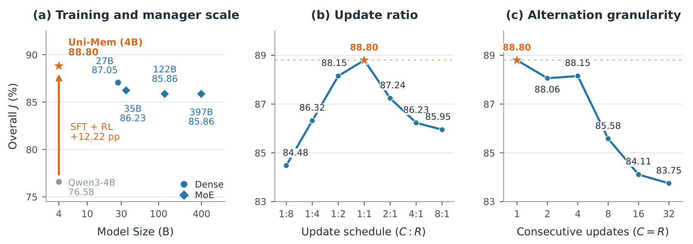
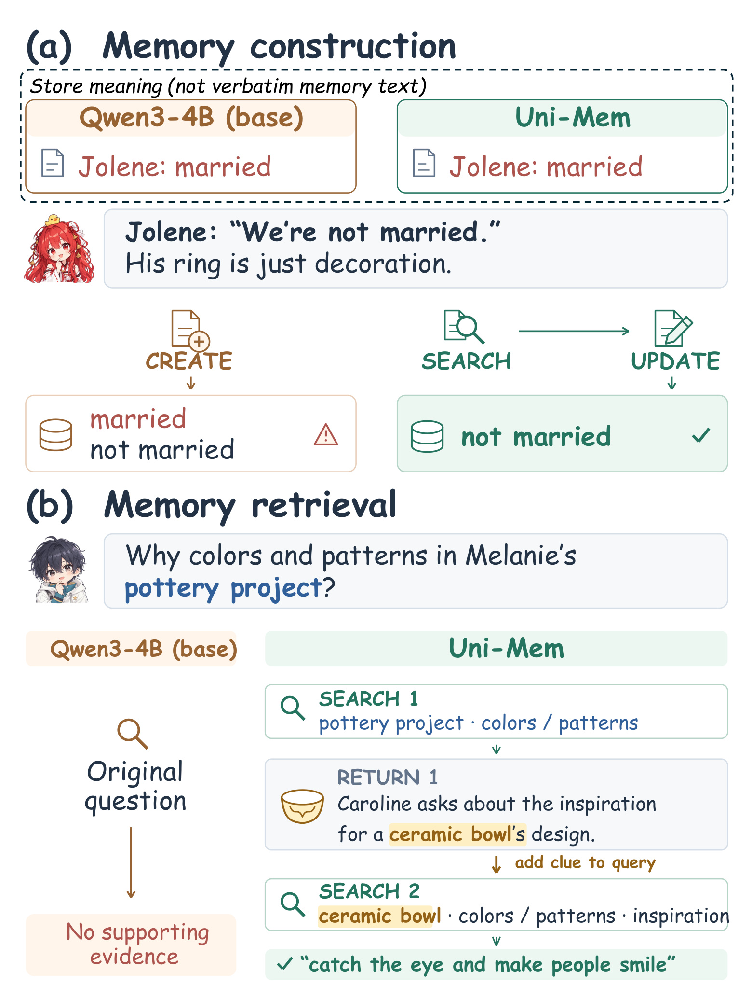
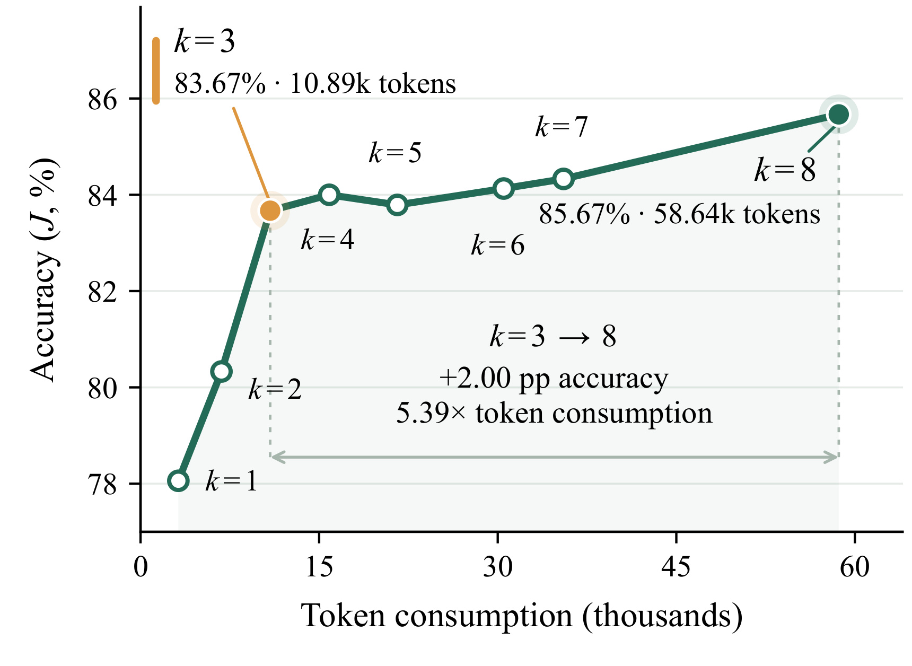

Uni-Mem：让长期记忆的构建与检索在同一策略中共同学习
Uni-Mem 的作者为 Zhiqian Xia、Jielong Tang、Ling-An Zeng、Shixiong Kai、Rong Yao、Hao Kong、Xiao Dong、Wei Wang、Mingxuan Yuan、Siyu Xia、Haifeng Xia；前两位共同一作。第一作者主要机构为东南大学，合作机构包括中山大学、华为诺亚方舟实验室和山东师范大学。论文于 2026 年 10 月 21 日公开，本文依据 v1 主文及附录，核验日期为 2026 年 10 月 23 日。论文入口：Uni-Mem: Learning a Long-Horizon Agentic Memory Manager with Unified Online Policy Optimization。本轮没有核验到作者独立发布的官方代码入口。
当不同轨迹中的记忆构建和检索阶段同时变化时，轨迹级组相对优势会混淆两者的贡献，使各阶段的学习信号难以辨别；数百次记忆操作之后才获得回答反馈，也难以判断该把成败归因给哪些操作。
1. 背景和问题
长期记忆的价值在于把超过上下文窗口的交互转成可以持续维护、按需访问的外部状态。用户可能数周前说过一个喜好，随后又纠正某段关系或计划；助手既要保存足够具体的名称、日期和细节，也要在未来问题出现时把正确记录找回来。单纯把历史压缩成摘要容易抹去以后才显得重要的信息，把全部原文送进长上下文则会增加推理成本。外部记忆因此承载两个相互依赖的决策过程：写入时决定保存、更新、删除什么，读取时决定查询、追踪和组合什么。本文讨论的成功标准是最终问答是否正确，并不等同于记忆文本看起来是否简洁。
这一区分意味着，存储质量与检索质量不能彼此替代。一个事实可能原样存在，但检索查询没有包含正确实体；一次检索也可能非常准确，却只能找到已经过时的记录。更棘手的是二者共享参数时的协同问题：构建策略调整记录措辞和粒度之后，旧检索习惯可能不再适用；检索策略学会新的查询方式之后，原来的构建监督也可能无法奖励更适合新检索习惯的存储方式。论文把这种依赖视为统一记忆学习的核心，而不是简单把两个已有代理拼接起来。
已有可学习记忆方法展示了强化学习的潜力，但最终回答奖励并不天然就是好的动作监督。设一个完整轨迹先处理长对话，进行数百次搜索与写入，随后再检索并回答多个问题。如果某条轨迹答对得更多，直接给其所有工具调用相同正优势，就会把与问题无关的操作一并奖励；若某条轨迹失败，则可能把正确保存证据的动作也一并惩罚。即便对整个组做奖励标准化，也只是把混合信号换算了尺度，没有解除构建与检索的混杂。这是作者对标准 GRPO 的具体质疑，不是对组相对优化本身的全面否定。
另一个困难来自长期状态的可变性。事件五创建的记录可能被事件十二改写，再在事件二十删除。最终回答是否成功取决于这条修改链的结果，仅把功劳归给原始证据所在的事件，会漏掉后来纠错或破坏信息的动作。相反，若把信用扩展到后续事件写过的所有内容，又可能把完全无关的新记录混进证据评分。论文因此区分“哪些当前记忆可用于评估存储充分性”和“哪些事件应该分享这份反馈”，两者必须分别维护。这个区分也是附录实现细节最值得阅读的部分。
这里的事件由输入数据触发，构建事件对应一个对话块，检索事件对应一个问题；事件内部才是长短不一的多轮工具交互。跨轨迹能够对齐的是同一个输入事件，而非第几个工具调用。不同策略可能一轮就找到旧记录，也可能反复搜索之后再更新，不能机械地把它们的第三次操作当成相同决策点。利用输入事件形成较稳定的对齐单元，既保留工具调用的灵活性，又把终局奖励分配到比整条轨迹更局部的位置。
任务设置也有明确限制。虽然形式化写成连续事件流，两个实验基准里的问题都在对话结束之后到达，因此本文主要验证先完成一段历史的构建再回答问题，并没有充分测试真实助手里用户一边问、一边继续提供新信息的交错过程。最终答案由外部冻结回答器生成，记忆管理器只提供证据；它既没有通过更新回答模型来吸收知识，也没有把训练标签直接作为在线检索接口。训练时的证据定位信息来自数据标注，推理时管理器面对的仍是可搜索的记忆内容。这些设置帮助隔离研究对象，也限定了结果能支持的应用范围。
阅读这篇工作时，可以把重点放在三个可检验的问题上：固定检索造成的噪声之后，构建是否学得更好；固定记忆状态之后，检索是否学得更好；把回报按事件对齐之后，是否比整轨迹奖励更有效。作者后面的模块消融与记忆库、检索器交叉组合正是围绕这些问题组织。相比只看最终高分，这种拆分更有助于判断收益来自工具环境、监督初始化、特定优化器，还是两个阶段真正共同改善。对于长期记忆维护，这样的诊断还可以指出应增加搜索预算还是修复错误存储；只观察问答准确率则难以作出这种区别。
原文对已有方法的比较还有一个容易被模型名掩盖的维度：代理究竟能否决定自己观察的内容。单轮构建方法通常由固定流程准备上下文，然后一次生成记忆操作；即使输出中包含多个操作，也不代表它能在看到第一次执行结果后重新决策。本文管理器可以先搜索、观察返回的已有记录，再决定创建、更新或结束。固定上下文若漏掉关键冲突，单轮策略往往没有机会补救；可交互策略则至少保留主动再查的可能。这解释了为什么比较训练方式之外，还需要检查工具环境，而不能把所有收益都归给一个新的优势计算公式。
对于最接近的 Mem-T，作者的区别既包含构建决策方式，也包含监督时间。离线构建动作由历史检索结果回看筛选，会受到当时检索是否找出证据的影响；同一条已经存好的事实，可能因为后来检索失败而得不到足够信用。在线检索又不断改变共享模型，使旧构建目标相对当前策略逐渐滞后。Uni-Mem 提出直接评价记忆当前内容，并随当前模型重新采样两侧轨迹，这个动机适用于训练过程的监督协调，但不等于宣称旧方法在所有数据上都必然退化。因果解释仍需后面的受控组合和消融支持。
记忆任务里的正确状态也与普通静态知识检索不同。明确更正同一事实时需要更新，而新增事件、不同日期或并存偏好通常应当创建另一条记录；把两者混淆会导致矛盾残留或误删有效历史。论文的工具提示具体规定先观察搜索结果再写入，并保留姓名、绝对日期和数量等细节。因此它的环境已经提供相当强的行为先验，研究检验的是策略能否在此规则下学会更好的操作，尚未回答模型能否自行发明完整记忆规范。这些先验也提示复现者在迁移领域时先定义状态语义：同一个数值变化究竟是错误修正还是新的时间观测，将直接改变何时更新、何时新增的合理答案。
2. 方法
2.1 统一多轮记忆管理代理

Figure 1 从训练信号的流向解释研究动机。左侧的构建单侧强化学习只训练写入，后续检索仍按固定相似度机制执行，因此下游失败里包含一个构建策略无法调整的环节。中间的共享管理器同时覆盖两个阶段，但构建依赖先前轨迹中筛出的离线模仿目标，检索则继续在线强化学习；两侧虽共享参数，监督更新的时间并不相同。右侧 Uni-Mem 把两侧都变成在线策略优化，并用交替更新与事件信用分配连接起来。图中的判断针对论文选取的方法范式，不能扩展成所有旧系统都没有多步工具交互。其直接启发是先检查奖励是否反映当前另一侧策略，而不只是检查参数是否共享。共享模型是一项结构选择，共同适应则需要训练数据、评分条件和更新节奏一起配合。这里在线表示训练轨迹随当前策略重新采样，与生产服务直接接收用户反馈更新模型是不同的含义；论文没有展示后者。图顶端还说明了接口责任：输入信息经过构建进入记忆库，查询通过检索形成相关证据，最终作答在这一对照图之外。训练可以改变两个阶段的策略，存储和检索工具本身仍是外部执行环境；因此从图中不能推断作者训练了新的向量数据库或回答模型。下方三组勾叉是对是否联合学习、是否两侧在线学习的定性分类，并不是性能分数。它们帮助读者建立假设，假设是否成立还必须由相同环境的消融与交叉替换检验。这也解释了笔记后文为何同时报告训练初始化、工具规则、裁判口径和调用预算：架构变化只有放在这些条件下，才能与实验效果建立可审查的联系。
管理器用一个共享策略处理两种事件。对话输入触发构建，它可搜索旧记录、创建新记录、更新或删除记录；问题输入触发检索，只允许搜索与结束。每一次工具执行的结果都会返回给策略，策略据此决定下一步，直到调用结束工具。这让搜索内容本身成为可学习决策：构建时可以先查是否存在矛盾信息，检索时可以根据初次命中的线索改写查询。外部存储使用 Mem0 的存储检索层与 Qdrant，作者绕过其原生固定事实抽取与操作决策流程，存储层负责执行，具体动作由管理器决定。
符号解释：$\mathcal E$ 是按到达顺序排列的事件流，$T$ 是对话块数量，$K$ 是问题数量，$e$ 表示一个构建或检索事件。该表达对应原文式（1），事件内操作数可以变化，因此事件对齐不要求工具序列长度相等。相同输入事件之前的记忆状态仍可能不同，这种差异属于各自采样历史。
符号解释：$q_k$ 为第 $k$ 个问题，$\mathcal D_k$ 为管理器检索出来的记忆证据集合，$g_\phi$ 为参数冻结的外部回答模型，$y_k$ 是生成答案。原文式（2）强调优化对象是管理器策略，回答器不参与梯度更新。管理器改善的路径是改变提供的证据，而非修改回答模型的内部知识。

Figure 2 的四个面板构成一条完整学习链路。上方面板把新对话块和问题转换为不同事件，二者进入同一个管理器，但允许的工具集合不同；检索证据最终交给外部回答模型。左下先定位与问题相关的构建事件，再通过直接检查已存证据，区分没存好与没取好；接着把同一事件在组内不同轨迹的反馈比较，并将优势广播到事件内操作。右下给出两个优化阶段：构建阶段从空库独立采样多个记忆库，绕过学习型检索评分；检索阶段固定一份共享记忆库，采样多个检索延续。关键的控制变量因此是评分时的检索环节或采样时的存储状态，而不是让两个阶段完全不交流。两侧更新的是同一组参数，下一轮共享库又由当前策略重新构建，所以仍然保持在线共同适应。图中的掩码还提示失败处理具有选择性：不能因为记忆中缺少答案就反向惩罚检索策略。它牺牲一部分可用样本，换取更明确的责任归属，但也把训练质量与证据标注、回答器和裁判的可靠性紧密绑定。构建评分并非真实部署时的推理路径，因此训练收益不能被解释成索引接口直接提升了测试召回率；推理时仍必须由策略完成多轮搜索。
记录的主文表示为唯一标识、来源对话块编号和正文，实际实现维护累计来源列表。创建记录时登记当前块，更新时保留旧来源并追加新块；这份元数据对管理器不可见，只供训练评分与信用追踪。构建事件每次提供至多两条新消息和同会话前十轮只读上下文。写操作必须发生在已经观察过本事件相关搜索结果的后续回复中，空结果也算合法观察；把首次搜索和写入放同一条回复会被拒绝。检索累计搜索结果并按记录标识去重，最终交给回答器。这些工具约束本身构成环境先验，复现时不能只实现优化公式而忽略接口行为。
2.2 逐事件信用分配
事件信用分配先把每个问题的结果与原始证据对话块关联，再评估当前库里相关记录是否足以回答。训练数据提供证据块集合，作者据此定位相关构建事件。这里不是训练一个新的证据预测器，而是使用已有标注提供更细监督；这也意味着无标注真实交互不能直接照搬整个训练流程。
符号解释：$J_\psi$ 为固定裁判，$y_k^\star$ 为参考答案，$R_k$ 为答案对错奖励，原文式（3）。二元裁判结果是近似的任务监督，并非存储充分性或因果贡献的无误真值。若裁判对部分等价表达判错，后续所有局部归因都会继承这个误差。
符号解释：$E_k$ 是第 $k$ 个问题的人工标注支持证据块编号集合，$\mathcal E_k^{\mathrm{con}}$ 是由这些块触发的构建事件集合，原文式（4）。此信息仅训练时使用，不能把这里的索引访问视为模型在测试时已知证据位置。训练和推理的信息边界在这里必须严格区分。
符号解释：$B$ 是某条轨迹结束后的记忆库，$\operatorname{Index}$ 选择仍存活且来源列表与 $E_k$ 有交集的记录当前版本，$S_k$ 为直接使用这些记录回答的得分。对应原文式（5），它绕过学习型检索，近似回答存下来的内容是否够用。这不是把原始证据原文直接交给回答器：如果策略遗漏了信息，索引到的记忆依然可能无法支持答案。
符号解释：$n$ 标识组内轨迹，$B^{(n)}$ 为其最终记忆库，带波浪号的事件集合包含原始证据事件以及同一记录后续的更新、删除事件。这里采用原文式（6）的更新稳健版本；一个事件关联多个问题时累积其存储得分，与问题无关的事件没有回报并排除。这里没有给无关事件补零，否则会改变有效组的均值与方差。
符号解释：$\overline M$ 为检索阶段组内共享记忆库，$\bot$ 表示从组统计和梯度中剔除，原文式（7）。答对保留正奖励；答错但库里有足够信息才给零奖励；答错且存储不足则掩码。掩码与零奖励不同，后者仍会影响组均值和相对优势，前者完全不进入有效比较。
更新链处理把信用接收者与记忆选取严格分开。某证据记录先创建、后更新、再删除，三个事件都可能分享最终证据得分；但新增的更新事件若同时写过其他记录，这些无关记录不会因此被全部塞进索引评分。原始证据编号仍是选取依据，扩展只作用于信用集合。删除也不必然让得分变零：若其他仍存活的相关记录足以回答，最终得分仍可为一。它能追踪操作链，却没有为链内每个动作算出独立边际贡献，同一事件内所有调用也共享优势，所以属于更局部的归因近似。
2.3 统一管理策略优化
共享策略先用监督微调建立工具格式、记忆写入和检索能力，再做阶段解耦 GRPO。构建阶段的兄弟轨迹从空库处理同一历史，但评价只通过证据索引评分，从而移除学习型检索变动。检索阶段先用当前策略快照构建一次记忆库，组内所有问题检索轨迹共享该库，从而把组内回报差异主要对应到检索选择。共享库并非整个训练期不变，它随当前策略重新采样。阶段解耦针对组内比较条件，统一策略仍通过交替更新保持耦合。
符号解释：$p$ 为构建或检索阶段，$\mu_{p,e}$ 与 $\sigma_{p,e}$ 是同一输入事件位置上有效轨迹回报的均值与标准差，$\delta$ 是稳定常数，原文式（8）。有效回报少于两个或方差为零的组被丢弃，事件内所有工具调用令牌共享此优势。相比全局优势，这里比较的是同一个对话块或同一个问题，而非整段历史的总成功率。
符号解释：$\tau_p^{(n)}$ 包含本阶段保留的工具调用令牌，$o$ 是令牌，$e(o)$ 是其事件，$\rho_o$ 是当前策略相对采样旧策略的令牌概率比，$\epsilon$ 为裁剪阈值，原文式（9）。无保留令牌的轨迹跳过，原文配置没有加入 KL 惩罚。事件级回报最终仍通过令牌级策略目标更新模型，并未直接优化数据库状态。
符号解释：两个 $\lambda$ 是阶段开关；构建更新时取一和零，检索更新时反过来，原文式（10）。调度参数规定连续构建与连续检索更新次数，默认一比一交替。这里不是每步同时将两个梯度等权相加，而是按调度轮流优化同一策略。两边更新间隔过长会产生新的相互适应滞后，后文调度实验直接检验了这一点。
全局奖励依然承担任务目标的角色，事件监督则改变信用分辨率。标准 GRPO 的全轨迹总分不能区分同一问题究竟在哪个阶段失败；单阶段加 ECA 能局部化并掩码一些失败，但构建与检索仍同时变化。阶段解耦进一步控制另一侧变动，却没有消除历史记忆状态的全部随机性：构建轨迹相同事件发生时的前置库仍可能不同，这是采样轨迹的一部分。理解这一剩余差异，能避免把方法夸大成严格因果识别或完全无偏的动作价值估计。
3. 实验结果
3.1 数据、训练和评价口径
LoCoMo 采用与 Memory-R2 一致的二比一比七训练、验证、测试划分，LongMemEval 用于分布外测试。主评测管理器为 Qwen3-4B-Instruct，外部回答器是 GPT-OSS-120B，裁判为 GPT-4o-mini，使用 Mem0 对错判定提示。强化学习期间则为控制成本，以本地 Qwen3.8-27B 同时承担冻结回答器和裁判，记忆嵌入来自 Qwen3-Embedding-4B。训练和最终评测回答模型不同，说明收益至少不局限于训练回答器，但不等于已证明对任意回答模型都稳健。主指标是 LLM 裁判判为正确的比例，不能与检索召回率、人工事实性或严格答案匹配混为一谈。
监督冷启动使用额外构造的四个多会话任务，共一百一十七会话、二千二百九十轮、七百七十三问答，历史长度从一百六十二到一千零五十四轮。GPT-5.4 生成带工具观察的交互示范，只对助手令牌计算损失。学习率为 $10^{-5}$、全局批量八、最大序列长一万六千三百八十四。作者选第八百六十二步检查点进入强化学习，综合下游准确率、格式、结束工具混用和策略多样性，而非只取验证准确率最高的检查点。第千七百二十四步的验证准确率更高，这一选择应在复现实验中显式固定，不能事后根据测试结果重新挑选。
强化学习采用每任务八条轨迹，任务批量二，策略学习率 $2\times10^{-6}$，采样温度零点七，阶段一比一交替，KL 和熵系数均零。资源为两台昇腾九一零B节点，一台八张计算卡训练，另一台承载回答、裁判、嵌入和存储服务。每事件最多八次搜索、二十四次管理器回复，构建与检索默认搜索返回数量分别十和二十。这些服务调用与多轨迹样本量意味着成本远高于仅看四十亿参数管理器所暗示的规模；参数小不能直接推出训练便宜或在线延迟低。
3.2 LoCoMo 主结果与裁判敏感性

Table 1 中完整 Uni-Mem 的总体裁判准确率为百分之八十八点八零，重评的 Memory-R2（OSS）为百分之七十七点八七，差十点九三个百分点；重评 Mem-T 为百分之七十六点四九，差十二点三一个百分点。无监督冷启动版本仍达到百分之八十点九九，比前者高三点一二个百分点，因此收益不能完全归结为示范数据。分项看，多跳、开放域、单跳、时间问题分别为百分之八十七点零六、七十九点零三、九十一点五一、八十六点零八，均高于表中的对应比较项。这里应该把领先限定在论文列出的设置与主指标上，不把数据表中的历史参考值当成严格重现实验。表里只有带标记的 Memory-R2、其同回答器版本和 Mem-T 是作者在一致判分条件下重评的；RAG、Mem0 等其他数字来自先前工作的原协议，部分回答模型与裁判提示不同，口径不可比。对算法效果最可信的支持因此来自重评基线和同环境消融，而不是拿整个表的最大差值来宣传。主结果显示共享小管理器具有竞争力，但它使用的回答、裁判、嵌入和工具存储能力仍是系统整体的一部分。另一个易忽略的事实是同回答器比较只匹配回答模型，并未完全匹配记忆工具、训练方式或调用预算，十点九三个百分点应描述为受控评测下的系统差值。
主表还需要区分总分与类别分。总体分数不是对四个类别简单等权平均，而受测试问题分布影响；某类改善较大，未必贡献相同幅度的总体收益。论文报告无监督冷启动版本的时间问题明显低于完整版本，这提示示范初始化对不同能力的影响并不均匀。进一步比较应同时保留每类样本量、难度和判定结果，而不能只用一个总体百分数决定训练是否成功。

Table 8 说明为什么必须克制解释跨论文分数。Memory-R2 原报告总体百分之八十点九九，本轮统一提示重评为百分之七十一点二六，下降九点七三个百分点；同回答器 OSS 版本原报告百分之八十七点一零，重评为百分之七十七点八七，下降九点二三个百分点。这些数字来自官方检查点的重新评价，并非作者重新训练了一个更差的模型。附录把差异主要归于裁判提示：当前采用与 Mem0 对齐的提示，先前工作使用另一套。如此大的判分移动足以改变许多工作间看似明显的差距，因而不能用 Uni-Mem 的八十八点八零直接减去另一篇论文的八十七点一零，称为完整受控提升。相同测试划分、裁判模型和提示是可信比较的最低条件；再匹配回答器可进一步缩小系统差异，但仍不自动等同训练数据、工具环境和开销完全一致。裁判提示本身也不是真实用户效用的唯一标准，所见优势还需要人工复核和其他判分器验证。这张附录表使论文的证据边界更清楚，也让读者知道哪些较高历史分数不能直接照搬到当前排序。尤其是日期、相对时间和较长答案的宽松判定，可能改变系统倾向；复现必须保存完整提示与回答文本，才能追溯变化究竟来自检索还是评价。
另外，表中两个基线的各类别下调幅度并不一致，说明提示变化不只是给所有答案统一减去一个常数。历史结果不能通过简单加减九个百分点完成校准，必须重新评估逐条回答；否则类别间排序与总体差异仍可能失真。
3.3 模块增量与构建、检索交叉组合

Table 2 将原始管理器或监督微调后的管理器作为起点。第一组总体结果从起点的百分之七十六点五八，经过标准 GRPO 的七十六点九五、加入事件信用的七十八点二四、阶段解耦的八十点七二，到加入更新链的八十点九九。标准 GRPO 只增加零点三七个百分点，逐事件信用再增加一点二九，阶段解耦再增加二点四八，更新归因再增加零点二七。监督初始化组对应八十三点五六、八十四点零二、八十七点零五、八十八点零六、八十八点八零。事件信用在此贡献三点零三，阶段解耦贡献一点零一，更新链贡献零点七四个百分点，说明组件效应依赖起点。总体指标逐步提高，不代表所有子类单调提高：非监督组标准 GRPO 把时间问题从五十七点八一降到五十四点零一；监督组加入更新稳健归因之后，多跳反而从八十八点五六降到八十七点零六。非监督组最后一步的时间准确率也从六十五点八二回落到六十二点八七。作者的有效应理解为总体受益，而不能改写成所有能力都提升。当前表未提供多随机种子置信区间，零点二七这样的小增益尤其不适合过度解释成确定的独立贡献。组件按固定顺序逐个加入，尚不足以辨认所有交互效应，也没有证明任意顺序下都会得到同样增量。
这组增量实验也说明了为什么不能把监督初始化简单当成一次固定加分。原始模型经过事件信用与解耦已有明显收益，监督模型在更高起点上仍能继续提高，但每个组件的幅度不同。理解为初始化改变了策略的探索分布和工具行为更为稳妥，至于具体减少了多少非法操作、增加了多少有效纠错，当前消融表没有提供足够细的行为统计，仍属于待核验的机制解释。

Table 3 比单一终分更直接回答两个能力是否都进步。基础库配基础检索总体为百分之七十六点五八，基础库配训练后检索升至八十一点零八，增加四点五零；训练后库配基础检索达到八十四点七六，较起点增加八点一八；两者都训练则为八十八点八零。固定训练后库再替换检索策略仍有四点零四个百分点增益，表明检索的改善并不只来自更好的存储。时间问题尤其依赖记忆库改进：基础检索在训练后库可到八十一点八六，远高于原始五十七点八一，这与显式纠错、日期保存的机制一致，但表本身没有单独隔离这些行为。各类别仍有不同方向，例如只换训练后库、保留基础检索时，多跳从七十八点六一下降至七十七点六一；只换检索在基础库上也降低开放域分数。因而交叉组合证明的是两种能力的总体可迁移贡献，并非两个模块完全独立。两种单独增益也不能简单相加后称为协同效应，满配分数并没有超过这种机械加和。更合理的解释是学习后的存储与查询相互适配，同时各自提供一部分改善；要证明超加性的协同，还需要事先定义交互量和不确定性检验。这个实验也没有固定每个系统的搜索次数，因此其贡献解释围绕策略与状态替换，不能进一步推断单位调用的绝对效率。
交叉组合进一步提示评估记忆系统应保存可复用的中间库快照。只有在同一状态上替换检索器，才能较干净地观察查询策略变化；如果每次连记忆库一起重建，结果再次把两侧混到一起。反过来，固定同一检索器对不同库作答，也能把存储价值与回答器能力的变化分开，这是比单次端到端问答更可操作的诊断方式。
3.4 跨基准泛化与交替调度

Figure 3 给出 LongMemEval-Oracle 和 LongMemEval-S 的六类结果，包括单会话用户信息、助手信息、偏好、多会话、知识更新和时间推理。左图中 Uni-Mem 在偏好与多会话方向明显优于比较项，在知识更新、时间推理上也超过 Mem-T；但单会话用户信息并非处处最优，橙色曲线在该轴略高。右图相较 Memory-R2 两种版本，绿色曲线六个方向均在外侧，支持从 LoCoMo 学到的管理方式能迁移到更大历史设置。需要注意 Mem-T 只出现在 Oracle 面板，不能据此宣称它在 S 版本同样落后。雷达图适合检查类别趋势，不适合读取精确小数；论文此处没有列出逐类数字表，本文不从像素估算新的准确率。Oracle 与 S 的输入规模、干扰条件不同，两个面板之间的绝对差异也不应当直接解释成退化百分比。证据支持跨基准迁移，但还不能证明面对真实用户数据分布漂移、跨语言历史或任意长会话都有同等收益。
两种基准版本因此应分别报告，并保留每条曲线真正出现的比较系统。特别是缺少的曲线属于未报告结果，不能把缺失当成失败，也不能在没有数字明细时编造统一领先幅度。

Figure 4 将参数规模和优化调度放在同一个观察框架下。左图同环境四十亿参数基础管理器为百分之七十六点五八，经监督加强化学习达到八十八点八零，提高十二点二二个百分点；更大的现成管理器中，二百七十亿模型为八十七点零五，三千九百七十亿总参数的混合专家模型为八十五点八六。训练针对性在这个工具任务上很有价值，但各模型代际、结构和激活参数不同，不能把横轴直接当推理 FLOPs 或内存成本。中图更新比例一比一为八十八点八零，一比八降至八十四点四八，八比一为八十五点九五，过分偏向任一阶段都较差。右图保持相同两侧分配，却把连续更新块从一比一加长到三十二比三十二，分数下降为八十三点七五；二比二和四比四接近，但八比八之后明显下降。这个实验与作者担心的共享策略适应滞后吻合，说明既要分配平衡，也要足够频繁切换。它仍是有限调度网格的经验结果，而非一比一在所有数据和模型上最优的定理。图中同样没有开销匹配的训练时间曲线，改变调度对服务排队和吞吐的影响尚需另测。小管理器超过大管理器也只是同工具环境下的一项任务结果，不能据此外推到开放域推理、通用知识或其他工具任务。
从更新调度角度看，比例与粒度是两个独立旋钮。只写一比一会遗漏连续更新块究竟有多长，训练代码应同时记录两项配置。图中一比二也接近最优，而四比四略高于二比二，说明有限实验并不是一条严格单调规律；稳健复现应比较趋势与区间，不要求每个相邻设置都复现相同排序。
3.5 行为案例与检索成本

Figure 5 上半部比较对同一错误关系信息的修正。两份起始库都把 Jolene 记成已婚，随后对话明确否认婚姻关系，并解释戒指只是装饰。基础管理器创建一条未婚新记录，留下与已婚并存的矛盾；训练管理器先搜索相关旧记录，再更新它，使库内表述一致。下半部问陶艺项目的颜色与图案为何如此，初次检索找到陶瓷碗设计灵感线索，Uni-Mem 把该实体加入第二次查询，最终找到吸引眼球、让人微笑的答案。图展示的是语义概括而非逐字记忆日志，因此能说明作者期望的两类行为，不能作为大样本错误率、冲突解决成功率或查询效率的统计证明。对于实际复现，还应记录误更新率：如果不同日期的新事件被误当纠正旧事实，过度更新同样会破坏长期信息。第二次搜索也不意味着所有问题都需要多轮，对于已经命中完整证据的简单问题，强行继续搜索反而可能引入干扰和额外成本。

Figure 8 揭示多步搜索的边际收益。最大检索步数从一提高到三，裁判准确率由百分之七十八点零六升至八十三点六七；继续从三提高到八，只再增加两点零零个百分点，达到八十五点六七，但令牌消耗由一万零八百八十九增至五万八千六百四十二，为五点三九倍。中间个别步数的分数还略有回落，说明更多调用并不保证每次都更好。这里回答与裁判均采用训练服务中的 Qwen3.8-27B，所以这些准确率不能直接与主表使用 GPT-OSS-120B 和 GPT-4o-mini 的八十八点八零横向相减。令牌量也不是完整金钱或延迟成本：不同服务并发、上下文累积、向量检索、网络和数据库写入都可能影响端到端时间。对部署而言，三步附近可能值得作为预算起点，但论文未证明固定三步适合所有问题。更有价值的后续实验是按置信度、搜索新颖性或证据充分性自适应停止，并在相同花费下比较策略收益。
附录训练曲线显示前二十步均值百分之七十五点七六，最后二十步为八十一点四一，上升五点六五个百分点；它使用训练期回答器与裁判，只证明该过程里的学习趋势，不能替代测试集泛化曲线。作者也明确承认奖励需要完成下游回答并调用裁判，计算和等待开销突出，提出并行评价、异步强化学习以及更稳健过程监督作为方向。本文没有给出完整训练账单、真实线上用户实验或服务时延分位数，因而从研究结果推进生产系统时，仍需补齐这些运营指标。
这项效率实验报告的是令牌消耗，未披露货币账单，不能转写成具体费用节省比例。
4. 总结
Uni-Mem 最有价值的贡献是把统一记忆管理中的两个责任混杂问题拆开：组内比较时控制另一阶段变动，长期轨迹中按输入事件定位信用。构建通过证据索引评分观察已经保存的信息，而检索在同一共享库上比较搜索策略；事件级标准化再把终局任务奖励传到较局部的工具调用。更新链追踪让后续纠错或删除也承担相应反馈，避免只奖励最初的写入。这样的组合比单纯给一段代理轨迹套用标准 GRPO 更贴近任务结构，其证据来自主结果、同环境增量消融、能力交叉组合和调度分析，而不是只靠一张终分表。
第一项局限是训练需要支持证据块标注。真实私人助手、跨应用记忆或隐式偏好往往没有现成证据位置，若改用自动对齐器，错误标注会同时污染构建评分、检索掩码与信用集合。第二项局限是证据充分性由冻结回答器和二元裁判近似，索引记录答不出来可能是回答能力不足，答出来也可能受模型先验影响；它比普通终局奖更可诊断，却仍不是完全可靠的状态标签。第三项局限是事件内操作共享优势，无法区分同一事件中无效搜索、必要更新和偶然操作的边际价值，历史前置库差异也仍存在。
第四项局限是数据和评估规模。训练与测试划分依托 LoCoMo，分布外证据主要来自 LongMemEval，尚未覆盖广泛自然交互、语言、领域和对抗性记忆污染。两个基准的问答在历史之后到达，持续交错事件流还缺少直接检验。第五项局限是裁判敏感性和实验不确定性：重评提示能带来九个百分点以上的分数变化，细小模块收益又未附多种子区间，因此应优先相信较大且多项证据一致的变化。第六项局限是系统成本，冻结模型并不意味着无需资源，多次回答、裁判与检索服务仍可能主导训练和在线花费。
对记忆系统研究的实际启发，是先把失败拆成信息没保住和信息没找着，再决定优化什么。记录来源和修改链不仅有助于事后审计，还能提供训练信用的结构基础；不过这些元数据应该与可见模型输入分离，以防训练监督被误当推理能力。对推荐或个性化系统，只能把这种责任拆分视为方法启发：用户画像维护与检索也有相似结构，但本文没有点击、转化、曝光偏差或在线推荐实验，不能据此承诺业务提升。
后续首先应在缺少人工证据标注的条件下，测试弱监督或自动证据定位，并报告标注错误对策略学习的敏感性。其次应做多随机种子、统一回答和裁判的成本匹配实验，特别比较两到三步预算下的效果，以及局部微小增益是否稳健。再次可构建问题与新对话交错、频繁修正事实的持续流，统计错误更新、误删与冲突残留率，检查更新链能否适应更长生命周期。最后值得把事件掩码和证据评分做成可观测诊断指标，结合检索新信息量设计自适应停止；只有在准确率、计算、等待和状态维护风险同时可度量后，统一记忆策略才具备更清楚的部署判断依据。